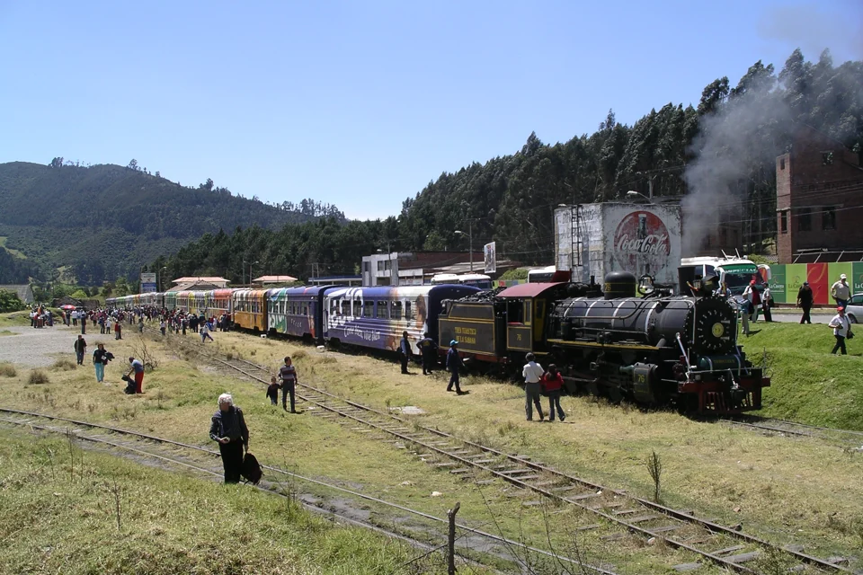
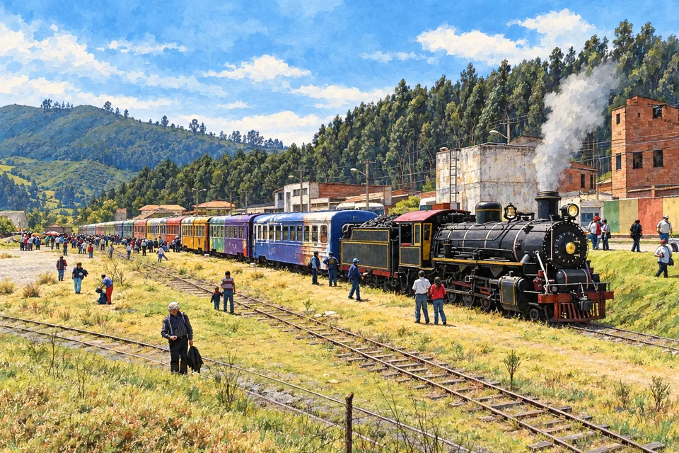

Propuestas para revisión. Ninguna foto histórica acredita material o estado actual. No se han aplicado cambios desde este subproceso.
1. Tren: referencia real frente a ilustración rechazada

Propuesta: fotografía original optimizada. Patio ferroviario de Zipaquirá, Nils Öberg, CC BY-SA3.0. Fecha declarada2007/EXIF2003. Mismo entorno y material, sin embellecimiento IA.

V4 rechazada. La IA intensificó azul del cielo y contraste, limpió edificios, simplificó mecanismos y embelleció la escena. La fuente colombiana no basta para aprobar la identidad visual del derivado.
Referencia2018 de JuanPeriodista, CC BY-SA4.0. Edificio, parque y colores reales; no muestra vías ni tren. No resuelve por sí sola la solicitud de contexto ferroviario conjunto.Ilustración anterior de fachada. Tiene identidad del edificio pero no contexto ferroviario; no se presenta como corrección suficiente.
Fotografía de P464thomas, 2-01-2011, CC BY-SA3.0. Vagón estático expuesto en la estación; no prueba servicio actual y no muestra la fachada completa. No se fusiona con otra foto para fingir ubicación.